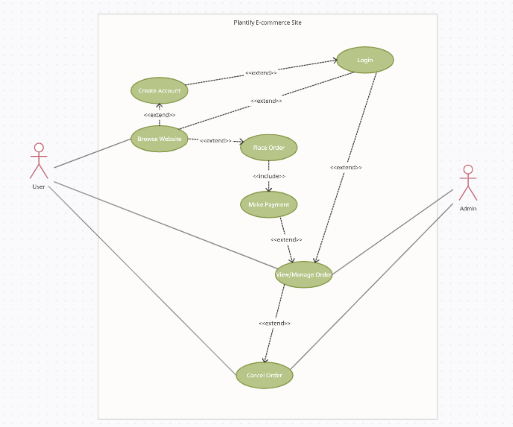

Milestone 1
Interpretation - Use Cases
Stakeholder Profiles
Project Management Documentation
The diagram provides an insightful depiction of user interactions within the system, with a special focus on the multifaceted scenarios that form the foundation of each use case. Scenarios are the unique paths that users follow within a use case, consisting of specific subtasks that collectively compose the complete user experience.
In this diagram, scenarios are illustrated as distinct and dynamic pathways, each representing a series of actions and system responses. To capture the full spectrum of user interactions, we've incorporated alternative paths, akin to 'if statements' and 'loops,' within these scenarios. This approach ensures that we account for diverse user behaviors and potential deviations from the primary workflow.
By visualizing scenarios in this manner, we aim to showcase the meticulous design consideration and meticulous planning that underpin our user-centered approach. Our goal is to create intuitive, robust, and flexible user experiences that cater to a wide range of user needs and actions.

Stakeholder Profiles
In our HCI design process, we engaged with a diverse group of stakeholders, totaling 10 participants, and conducted extensive questionnaires with more than 20 questions each. These questionnaires were instrumental in gathering comprehensive information about the users and their usage patterns.
Upon receiving and analyzing the feedback from these questionnaires, we were able to extract valuable insights into the context of use, cognitive abilities, physical abilities, and individual profiles for each identified stakeholder. Our stakeholders comprise four distinct groups: Users, Engineers and Designers, Sales and Marketing Personnel, and Managers.
In the realm of HCI design, Users hold the primary stake, as they are the direct end-users of the design. Engineers and Designers represent secondary stakeholders, contributing inputs and receiving outputs during the design process. Managers, in their role as facilitators, play a crucial part in ensuring the ongoing maintenance of the design. Lastly, Sales and Marketing Personnel, though indirectly involved, are impacted by the design but do not have direct contact with it.
Our overarching goals in designing the user interface (UI) are threefold: Firstly, the UI must be easy to learn, facilitating a seamless user onboarding experience. Secondly, it must effectively address the user's needs, aligning with their expectations and requirements. Finally, the UI's help features must be easily accessible and highly effective in swiftly resolving any issues or challenges the user may encounter.
It's essential to emphasize that defining a user's profile serves as a foundational step in HCI design. The unique characteristics and preferences of each user profile significantly influence the design and evaluation of the interface. By tailoring our design to the specific needs and capabilities of our stakeholders, we aim to create an HCI that not only meets but exceeds their expectations.
Open a PDF file example
Project Management Documentation
Open a PDF file example